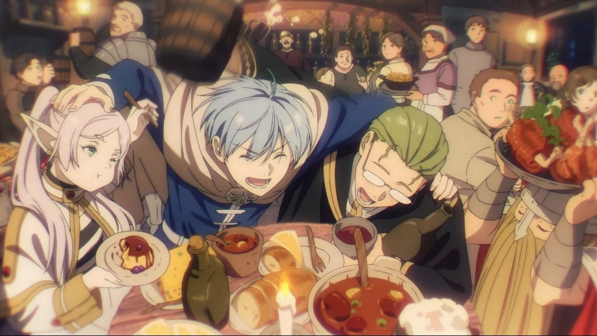

The best Fantasy anime for new fans:
Fantasy stories often have magic and other supernatural things as important parts of the story. They can take place in made-up worlds where magic is a normal thing.
Number 1 - Sword Art Online

Sword Art Online is definitely one of the most popular fantasy anime out there. For a lot of people this also was their gateway in to the world of anime. While by itself the show may not be as good as some others on this list, due to the fact that it was what got so many others in to anime, I decided to put it on this list as well.
In the near future, a Virtual Reality Massive Multiplayer Online Role-Playing Game (VRMMORPG) called Sword Art Online has been released where players control their avatars with their bodies using a piece of technology called Nerve Gear. players discover they cannot log out, as the game creator is holding them captive unless they reach the 100th floor of the game's tower and defeat the final boss. However, if they die in the game, they die in real life. Their struggle for survival starts now...
(Source: Crunchyroll, Anilist)
Honorable mention - Frieren: Beyond Journey's End
The newest entry on this list, Frieren: Beyond Journey's End, has taken anime fans by storm, being received incredibly well, despite its first season still airing weekly (at the time of writing this).
The adventure is over but life goes on for an elf mage just beginning to learn what living is all about. Elf mage Frieren and her courageous fellow adventurers have defeated the Demon King and brought peace to the land. But Frieren will long outlive the rest of her former party. How will she come to understand what life means to the people around her?
Decades after their victory, the funeral of one her friends confronts Frieren with her own near immortality. Frieren sets out to fulfill the last wishes of her comrades and finds herself beginning a new adventure…
(Source: Crunchyroll, Anilist)